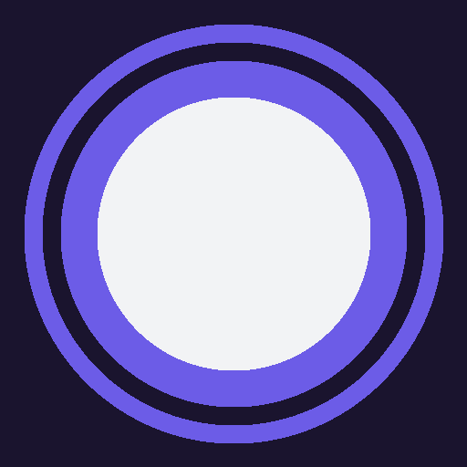

Pulsit
Memoriza. Repite. Supera cada fase.
Jugar
Personalizado
⚙ Ajustes
Ajustes
Sonido y vibración activados
Modo daltónico (formas además de color)
Volver
Modo personalizado
Cantidad de botones (3-9)
Tipo de estímulo
Solo colores
Solo números
Ambos
¿Los botones cambian de posición?
Longitud máxima de secuencia
Jugar
Volver
—
Menú
—
↺ Reiniciar nivel